BIENVENIDOS
WELCOME
CAMILA SOLANO CÓRDOVA
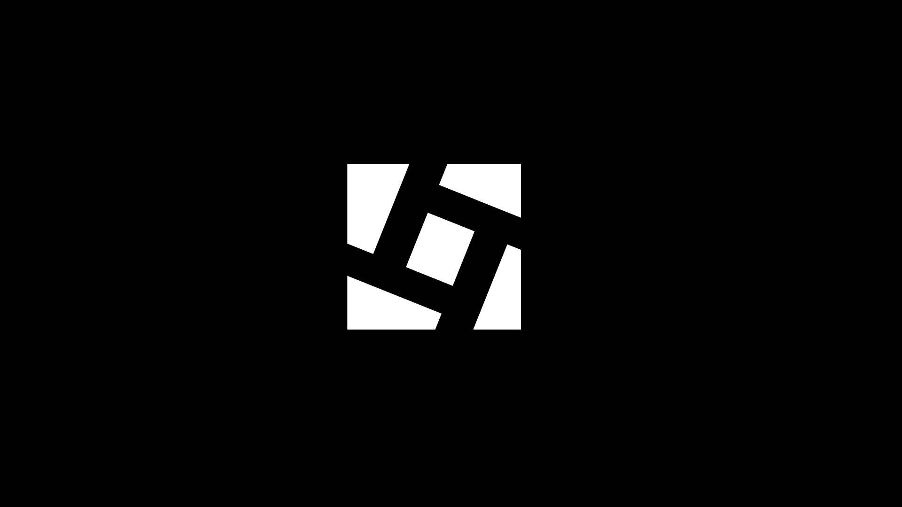
Platform concept to help emerging artists grow their audience without relying on large marketing budgets. Exploring growth strategies, user engagement, and platform scalability.
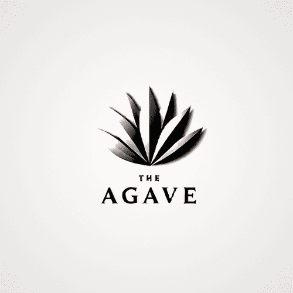
Premium agave liquor brand with two exclusive presentations. Focus on sustainable production and luxury brand design.
Próximamente
Próximamente
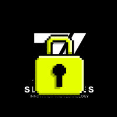
Próximamente
Próximamente
🎨 COLOR:
🌐 IDIOMA:
📍 LOCACIÓN: MILANO, ITALY
Master's candidate in Innovation and Technology Management with experience in data analysis and cross-functional environments. Proactive and self-driven learner, with a strong interest in sustainability, business innovation, and product development. Experience developing independent projects focused on market validation and value creation. Interested in product and project management roles within technology-driven organizations.
THE CREATIVE SIDE
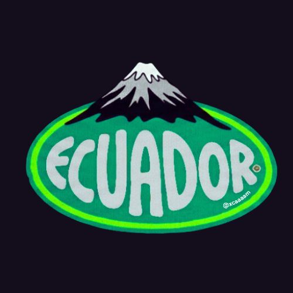
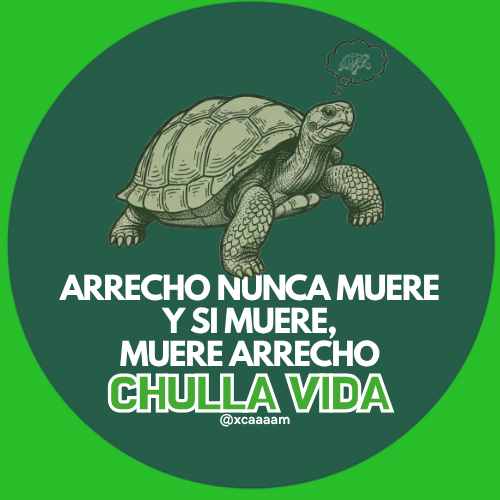
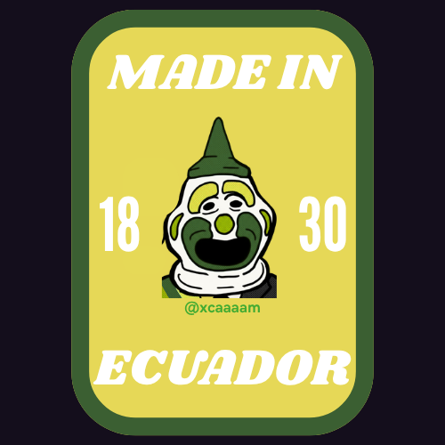


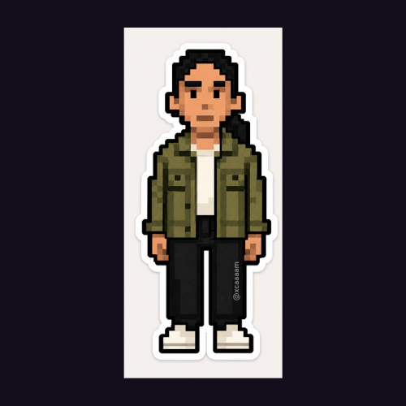
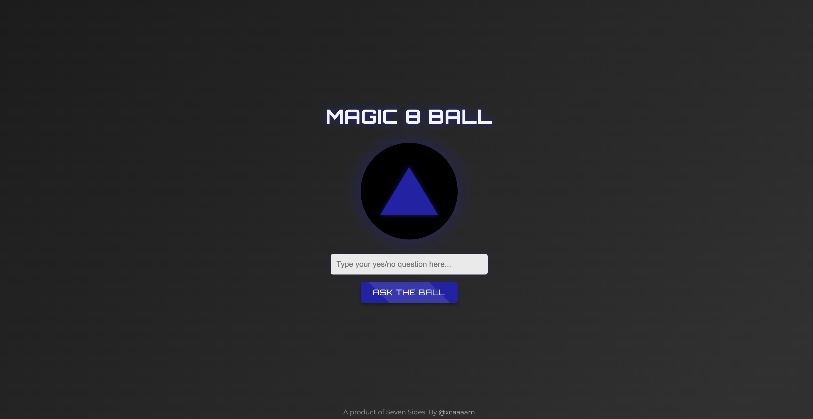
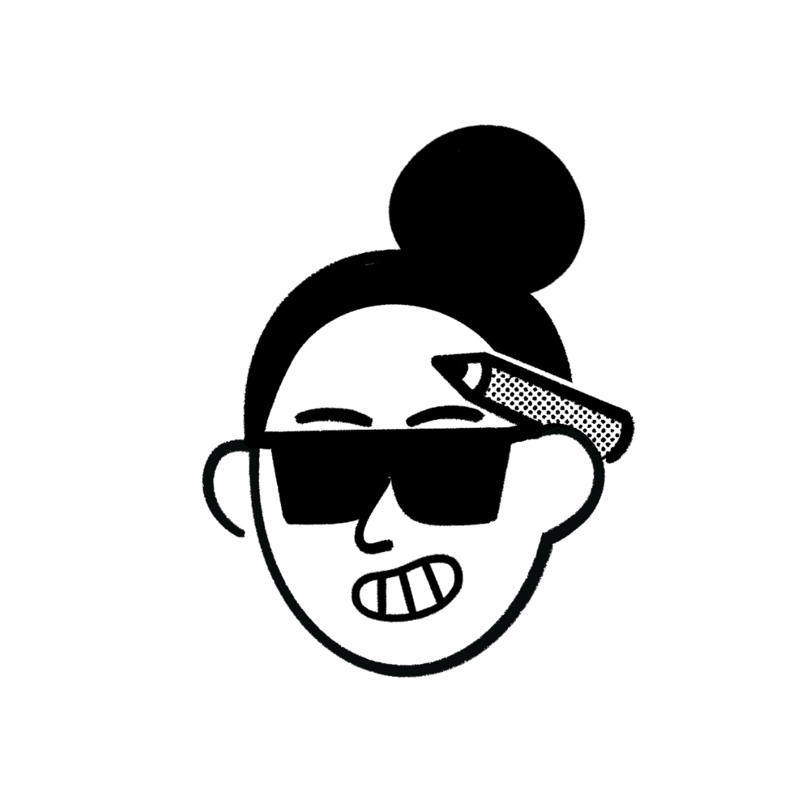
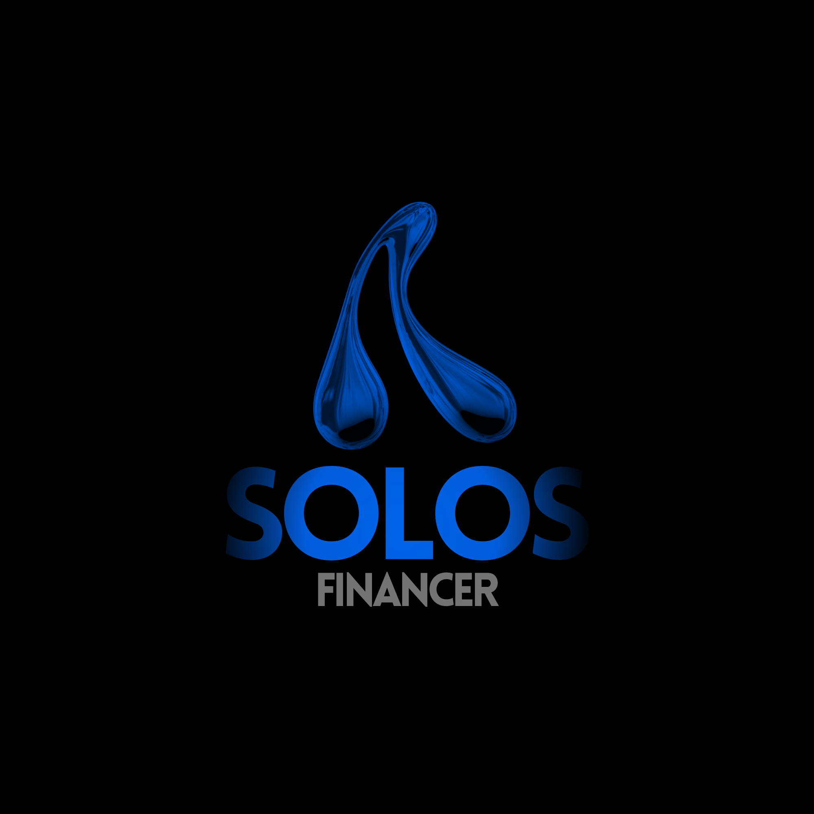
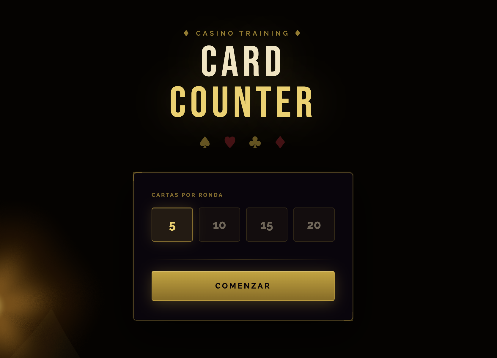
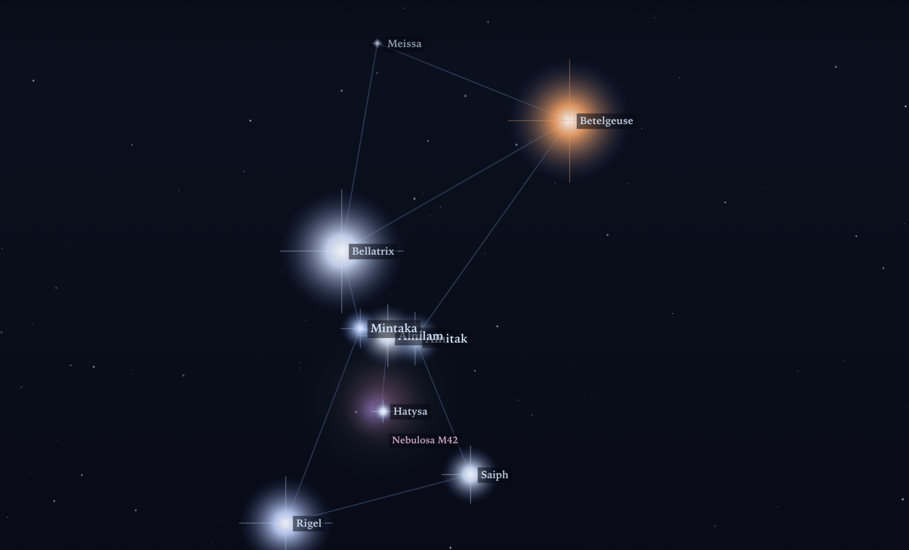
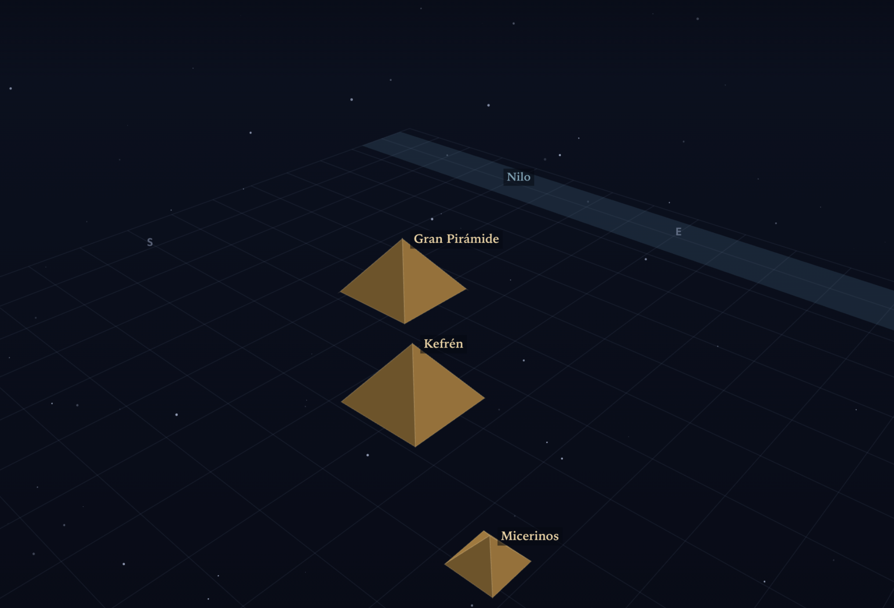
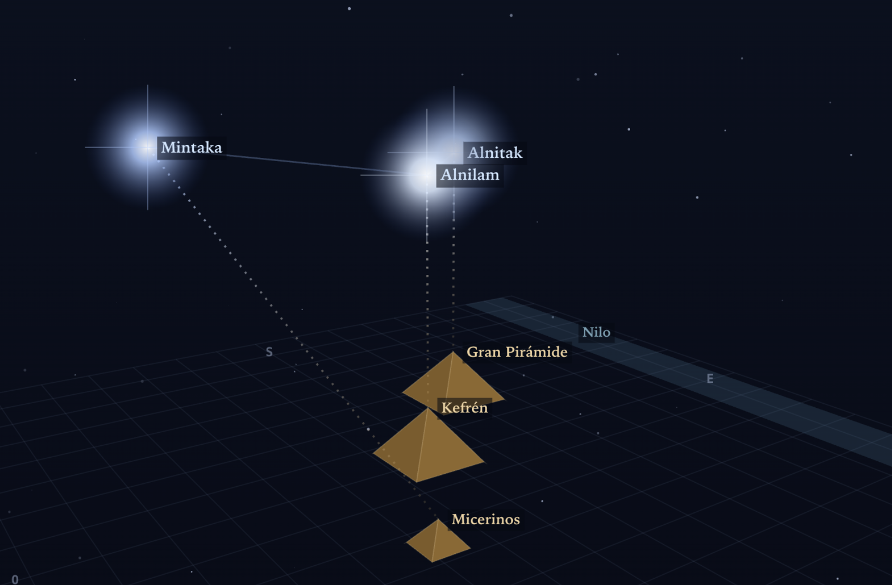
← scroll or drag to explore →
IN CASE YOU WOULD LIKE TO GET MORE ABOUT ME: